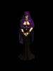
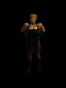
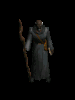
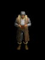
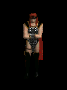
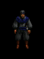

| |
 |
阿卡拉
罗格的牧师, 一个正统的女人, 当你需要帮助的时候, 可以从她那里了解更多的信息.
治疗 - 阿卡拉可以免费的恢复你的生命, 法力, 耐力.
交易 - 法杖, 权杖, 手杖, 书本, 卷轴, 钥匙和药水.
|
自我介绍:
" 我是阿卡拉, 目盲之眼这个修女会的高等女教士. 欢迎你们来到我们的营地, 但恐怕我们只能在这些危壁之中, 提供简陋的避风之处.
你可以看到, 我们古老的修女会已经陷入奇怪的诅咒中. 我们用来看守通往东方大门的伟大城塞, 已经被邪恶的女恶魔-安达利尔所占领.
我到现在还无法相信…但是她把许多曾经是我们姊妹的萝格们变成我们的敌人, 并把我们赶出祖先留下来的家园. 现在, 最后一个修女会的守护者, 可能早就死亡或是在荒野中倒下了.
我恳求你, 陌生人, 请你帮助我们. 找到一个方法去除这个可怕的诅咒, 我们就以对你不变的忠诚为代价."
法师 的对话与其他角色不同:
" 你好, 年轻的巫师. 在这个世界的黑暗之日, 能够多看到一些像你们仍在努力的人真好. 以我的观点来看, 这个世界需要更多的女人才能和这个巨大的阴影对抗. 但是我有点失态…
我是阿卡拉, 目盲之眼这个修女会的高等女教士. 欢迎你们来到我们的营地, 但恐怕我们只能在这些危壁之中, 提供简陋的避风之处.
你可以看到, 我们古老的修女会已经陷入奇怪的咀咒中. 我们用来看守通往东方大门的伟大城塞, 已经被邪恶的女恶魔-安达利尔所占领.
我到现在还无法相信…但是她把许多曾经是我们姊妹的萝格们变成我们的敌人, 并把我们赶出祖先留下来的家园. 现在, 最后一个修女会的守护者, 可能早就死亡或是在荒野中倒下了.
我恳求你, 陌生人, 请你帮助我们. 找到一个方法去除这个可怕的诅咒, 我们就以对你不变的忠诚为代价." |
|
打招呼:
"你好."; "很高兴见到你."; "有什么事吗?"; "早安."; "日安."; "晚安."; "我有些消息要告诉你."; "我有个任务给你."; "我要给你一个奖赏!"; "修道会的所有人都欢迎你们."; "欢迎回来, 我的朋友. 我们仍然在清理僧院, 但是只要你们愿意, 想要待多久都可以."
|
|
闲话:
"我了解凯恩是古代赫拉迪姆仅存的后代, 而且他对他们的知识十分渊博. 他可以随时化解我们迫在眉睫的危机, 是十分有用的帮手."
"卡夏的忠诚一直处于接近凶暴的程度, 但是我担心她的愤怒以及最近一些事情的挫折, 会让她走到饱受伤害的道路上. 她极度保护少数仍旧听她指挥的萝格, 除非情况危急, 否则不愿意派他们进入战场."
"恰西年轻而单纯. 不过, 我相信她身上的野蛮人之血将在碰上冒险和危机时激发出原有的力量. 她对她的工作十分自豪, 而且在发现她的武器和甲胄, 可以帮助人们早日结束这场黑暗的来袭时, 觉得十分自在."
"虽然他成为我们客人的时间并不长, 但是我可以感受到瓦瑞夫饱受到掠夺的苦难. 虽然他和我都心知肚明, 邪恶的恐怖已经覆盖了整个大地, 但是他唯一关心的是如何和他的商队一块到达东方的贸易站."
"老实说, 我已经尽我所有的能力把基得清乾净了. 他身上那一件斗蓬般的打扮, 就和他内心的不正直成正比; 而且他一直在祈祷别人受到不幸, 来改善自己的状况."
"荒野充满了邪恶、地狱的爪牙占领了我们应有的家园. 我们必须从僧院中洗掉所有的邪恶, 并回复世界的秩序."
"我通常会梦到我们夺回家乡的日子. 目盲之眼能够看穿时光的迷雾, 预见未来的光荣. 但是却无法看出是多久以后的事情."
"我们的纪律是精神上的成长, 必须与我们射箭的技能成正比... 我只希望这些足以对抗面前可怕的试链."
"你要注意, 你并没有让那个腐败的萝格受到命运的处罚. 一个人失去生命是一个悲剧, 但是失去灵魂更糟糕."
"虽然这个倒地的人曾经是我们修道院中的人, 你并不需要因为打倒他而感到惭愧, 因为他挡在你前往安达利尔的路上."
"也许, 当这个恶魔女王死亡之后, 我们的姊妹会醒过来; 但是她们也会因为被这件不洁的事情, 而受到永久的束缚."
(法师专有)
"『目盲之眼』修女会曾经有一段长久而闻名的历史. 经过一代又一代的磨练, 我们的修道会已经成为致命的战斗武力, 而女子们也为她们本身的命运而团结奋斗.
小心,年轻人, 对权力和知识的诱惑, 可能会带你走向毁灭. 我已经看到太多因为野心而昧惑了勇敢的心灵, 以及被知识吸引而卤莽步入危险的人.
你应该小心提防你即将探索的黑暗道路, 才能保住一条性命. " |
|
 |
恰西
罗格的铁匠, 显的有些笨重, 当提到恶魔时声音会变的沙哑.
修理 - 支付一些报酬可以修复受损的武器和盔甲.
交易 - 出售武器, 盔甲, 十字弓弹和箭矢.
|
自我介绍:
" 嗨, 我是恰西, 营地中的铁匠. 能见到强壮的冒险者真好.
当暗黑破坏神第一次攻击我们的城镇崔斯特瑞姆时, 我的很多姊妹们都勇敢的对抗他. 她们回来之后都变成了老手, 并携带一些威力强大的物品. 不过, 看来她们的胜利并没有维持多久…现在她们大部份都受到安达利尔的控制.
"
野蛮人 的对话与其他角色不同:
" 哇, 你是野蛮人, 鸣--?真高兴能见到你. 我最近看过一些像你们这样的人在四处行动, 真是有点嫉妒…我真希望能和你们一块冒险.
噢, 对了…我是恰西, 这个营地中的铁匠. " |
|
打招呼:
"你好."; "很高兴见到你."; "有什么事吗?"; "早安."; "日安."; "晚安."; "我有些消息要告诉你."; "我有个任务给你."; "我要给你一个奖赏!"; "真高兴见到你!"; "你需要什么?"; "我能帮你什么忙吗?"; "噢, 你好. 能再见到你真好. 哇, 好棒的护甲!"
|
|
闲话:
"我并不是十分了解与凯恩有关的事情. 他看来有很多的秘密… 这让我有点担心."
"噢, 卡夏的确与众不同. 当然啦, 她对外面来的人是有点严苛, 但是谁能怪她? 她只是想要保护我们的修道会而己. 但是现在我们的姊妹回过头来对抗我们… 我想这一连串的麻烦事让她心硬如铁."
"阿卡拉, 我们的女教士和先知, 对我们姊妹的沦落最为焦急. 我害怕她不断的责备自己."
"我猜瓦瑞夫还好. 他大部份的时间看来都很严肃, 我从来没有长时间和他交谈过."
"噢, 我喜欢基得. 他很有趣, 他可以说出他旅行过的各地民风和故事, 我真希望能够亲眼看到他曾经看过的景像."
"我不明白, 为什么我们有些姊妹选择跟随安达利尔, 她们都是曾经在我们身边最强的战士."
(野蛮人专有)
"你知道, 我自从有记忆以来, 就一直和修女们在一块了. 但是阿卡拉告诉我, 我真正的父母是来自北方部族的野蛮人, 而且他们在我十分年少的时候就被杀死了.
有时我也会怀疑, 如果我从小被野蛮人抚养长大, 生活会不会还是这样.
我不知道.我很喜欢当铁匠… 不过有时我只是想要出去探索这个世界, 你了解吗? " |
|
 |
迪卡.凯恩
睿智的老人, 可以学习到很多这片大陆的历史, 他可以给你很多忠告.
凯恩被关在 崔斯特瑞姆. 一旦救出他, 他可以帮你:
鉴定物品 - 凯恩可以鉴定所有你物品栏中未鉴定的物品. 如果你没有在第一场景中完成了拯救凯恩的任务, 那么每鉴定一件物品, 凯恩会收取 100 金币 (所有难度相同) , 因为他没有得到你的帮助! =]
|
打招呼:
"你好."; "很高兴见到你."; "有什么事吗?"; "早安."; "日安."; "晚安."; "我有些消息要告诉你."; "我有个任务给你."; "我要给你一个奖赏!"; "真高兴见到你!"; "休息一下, 留神听着."; "你真的回来了!"
|
|
闲话:
"很久以前, 灵魂之石是由大天使泰瑞尔交给赫拉迪姆的, 他们使用它来囚禁三个罪恶之源. 我现在知道即使是这些神圣的古物, 也无法对抗暗黑破坏神的力量.
我希望他的二个兄弟仍被囚禁之中... 但我怕会更糟. "
"你得花一点时间才能精通你的技能... 而重覆的运用可以磨练你的技能. 但是你必须小心的选择你的新技能."
"你可以从你所杀死的恶魔身上取得一些神秘的东西. 有些对你十分有用... 有的则会造成重大伤害! 把它们带到我面前来, 我可以告诉你其中的秘密."
"我有没有告诉过你赫拉迪姆的事? 那边曾经有个法师一族的同盟, 试图找出永久囚禁三个罪恶之源的方法. 现在赫拉迪姆几乎没有人记得了... 而且这个地方挥舞的东西到现在没有人知道!
身为赫拉迪姆最后一人, 我祈祷我能够帮助你补正他们的失败. "
( 只有在得到第一场景第六个任务后 )
"很久以前, 暗黑破坏神和他的兄弟被一个较弱的邪魔从地狱丢到了人世之间. 看来, 现在地狱的平衡也被改变了, 在安达利尔与恐怖之王结盟后, 她在人类世界的存在, 对我们而言都不是个好兆头." |
|
 |
弗拉维
给你来自邪恶洞穴的警告.
|
打招呼:
"回头! 我能告诉你, 你想在下一个荒野平安的战斗必须得到更多的经验."
"停下来! 你应该完成阿卡拉交付你的任务, 才能继续你们的冒险. 到营地附近的荒野找一个洞窟好好搜索."
( 当邪恶洞穴任务完成后 )
"小心! 前面的邪气十分强大."
"小心! 面前的东西对所有的生物都有极大的危险!"
"注意! 在堕落的萝格战士不容小看." |
|
 |
基得
一个满嘴胡说八道的旅行商人.
交易 - 出售武器, 盔甲, 十字弓弹, 箭矢和钥匙.
赌博 - 支付一定金币后, 基得会给你一件未鉴定的物品. 一旦购买物品就将被鉴定. 点击这里 了解更多关于赌博的信息.
|
自我介绍:
" 各位早安! 我是基得, 而且我现在就可以告诉你们, 我是你们在这个被遗忘营地中最好的朋友. 像是多余的武器、一些黄金、一个小小的宝石, 都可以让我愿意和你们交换一些旅程上不可或缺的装备, 不管你们要完成什么任务都少不了我.
来, 来, 来…别害羞, 我所有的物品都可以保住你们的生命, 而且有二天的保固! "
死灵法师 的对话与其他角色不同:
"死灵法师! 我希望我再也不要看到你这种人.…我知道了, 最近这个区域中所出现的麻烦把各种人都引来了. 不过, 你的钱一样好用...
像是多余的武器、一些黄金、一个小小的宝石, 都可以让我愿意和你们交换一些旅程上不可或缺的装备, 不管你们要完成什么任务都少不了我.
来, 来, 来…别害羞, 我所有的物品都可以保住你们的生命, 而且有二天的保固! " |
|
打招呼:
"你好."; "很高兴见到你."; "有什么事吗?"; "早安."; "日安."; "晚安."; "我有些消息要告诉你."; "我有个任务给你."; "我要给你一个奖赏!"; "你需要什么?"; "需要我帮忙吗?"; "让我们来笔交易吧, 朋友."; "真高兴看到你. 自从萝格回到他们的僧院之后, 他们就不再从我这边购买任何东西了!" |
|
闲话:
"那个老笨蛋, 凯恩, 和湿淋淋的魁尔瑞一样疯狂, 我听说他在崔斯特瑞姆发生的事情中存活了下来. 基本上, 我根本不相信他讲的话."
"阿卡拉和卡夏是目盲之眼修道会中的修女, 但是她们所站的世界并不相同. 阿卡拉是慢速的魔法河流, 但是卡夏是战争中的腹蛇. 她们二人都献身于宗教上的信仰, 而且他们身边修女的叛变, 都让她们陷入永无止境的痛苦之中."
"恰西是个好女孩…, 但是她不是个会做生意的人! 我知道她不笨, 但是她对修改武器和甲胄的索价, 并没有帮助她赚大钱.
只要我一直让她的脑袋填满了故事和冒险, 她就永远都不会知道我正在削她的金钱! "
"瓦瑞夫十分好心, 让我随着他的商队旅行, 但是别让他把你扯进搜寻新东方商路的事情之中.
我正在这个地方赚大钱… 当然是从萝格身上! 从另一个角度来说, 你一定可以拿到我这边最好的价钱! "
"安达利尔的恶魔力量不只影响到僧院, 也同时波及了附近的森林. 所以, 如果你需要任何东西, 我就待在此处. "
"当我.... 或者说"如果"我....到达了鲁.高因, 我要去找一碗满满的纳兰得烟丝, 然后吸到尘世的感觉都离开我的身体为止. "
(死灵法师专有)
"别以为你能骗过我, 死灵法师. 我已经看过你们这种人的能力. 如果你和外面流窜的邪恶有关, 我也完全不要知道. 快点换完东西后就走吧!" |
|
 |
卡夏
罗格的雇佣兵首领, 非常难以琢磨, 面对鲜血和死亡从来不会退缩, 她的性格非常急噪但确值得信任.
雇佣 - 当你等级达到 9 级或者是杀了血鸟完成任务后就可以雇佣弓箭手. 关于雇佣兵的更多信息可以访问这里.
|
自我介绍:
" 欢迎, 外地人, 来到我们光荣的棚舍. 我知道你们是来此挑战邪恶, 让我们有机会取回先祖留下的家乡.
但是, 你必须知道这一点. 或许阿卡拉是我们精神上的领袖, 但我是指挥萝格们在战斗中行动的人. 要取得我的信任, 可不是光靠在荒野杀死几只怪物就行了的. "
亚马逊 的对话与其他角色不同:
" 哎哟, 哎哟, 我从来没有想过会在这个大地上看到亚马逊族的. .你一定十分勇敢才能来到此地. 我的很多姊妹沦落到黑暗的诅咒之中, 如果你不够小心的话, 也很可能遭到这种法术的影响. " |
|
打招呼:
"你好."; "很高兴见到你."; "有什么事吗?"; "早安."; "日安."; "晚安."; "我有些消息要告诉你."; "我有个任务给你."; "我要给你一个奖赏!"; "修女会所有人都欢迎你!"; "嗨, 又见面了, 外地人.就算在这边, 我们也听说了你在东边的伟大事迹."
以下为雇佣兵浪人:
"如你所愿!"; "马上办."; "是!"; "完成.";
(受到攻击或死亡)
"呃!"; "啊啊啊啊..." |
|
闲话:
"我有些萝格的子民告诉我有关迪卡.凯恩的事情. 他们说他是一个拥有丰富知识的人, 就我而言, 如果他不懂得如何作战, 那就无法判断他到底有多聪明. "
"阿卡拉从我有记忆开始, 就像母亲一样照顾我. 她聪明而善良, 但是我不认为她会硬起心肠, 用武力取回我们的僧院."
"我不太愿意信任外地来的人, 但是瓦瑞夫例外. 可是, 他从来不对我多说什么."
"在我们被放逐时, 我们的铁匠可以做出任何战斗用的东西.
在这个营地中, 她能做的十分有限. 她最好的工具都在僧院之中. "
"基得是只猪. 我已经气得把他丢出营地好几次, 但是恰西似乎认为他是个好同伴. 我不相信那个男人, 但是如果她觉得和他在一块十分自在, 那我就算了."
"如果我们能找出安达利尔是如何的引诱我们的修女, 那么, 或许我们能够把她们脑中的邪气清掉."
"在这个营地中, 我们是仅存且对修道会忠诚的人, 被迫活在一般的商人和农地的动物之间.
欢迎来到我们受苦难的轮回中. "
"也许崔斯特瑞姆命中注定要受到这场试链... 让邪恶布满大地. 我只希望我们不要受到同样的痛苦."
"有些夜晚我们集结在营火旁边重覆着史诗般的传说... 并试着忘掉让我失掉僧院的可怕事实."
(亚马逊专有)
"当我还十分年轻时, 阿卡拉告诉过我亚马逊人在战斗中无畏的故事, 而且他们的专精于长矛和弓箭. 我真期望我们手下可以和你们亚马逊人一样."
|
|
 |
瓦瑞夫
非常高大, 阿拉伯商队的领袖, 沉默寡言.
向东走 - 一但完成了第一场景任务后可以带你前往第二场景.
|
自我介绍:
"你好, 陌生人. 看到你们这一族的我并不惊讶. 在麻烦事不断的现在, 很多冒险者从远方旅行到此地.
毫无疑问的, 你们已经听说了降临在崔特斯姆特的悲剧. 也有人说暗黑破坏神这个恐怖之王, 又再度踏上这个世界.
我不知道该不该相信, 但是黑暗的流浪者的确在数星期之前经过此处. 他往东方前进, 前往由萝格僧院所看守的山区.
或许这算不上什么消息, 但是邪恶的力量似乎沿着他的足迹而复苏. 你看, 在流浪者经过没多久, 僧院往山区的大门就封了起来, 而且出现奇怪的生物开始破坏乡村.
一直到野外可以安心的露宿, 而且大门重新开放之前, 我都会一直待在这个洞穴之中. 我希望能在笼罩崔特斯姆特的阴影把我们统统吞噬掉以前, 能够前往鲁.高因. 如果你们那时还活着, 我就可以带你们去.
你也该和阿卡拉谈谈, 她似乎是这个营地的领导者. 也许她可以告诉你其他事情. "
圣骑士 的对话与其他角色不同:
" 很高兴见到你, 高贵的圣骑士. 我已经有很长的一段时间没看到你们这些来自西方的人了, 尽我所能协助你们解决路上的问题, 将是我最大的荣幸.
毫无疑问的, 你们已经听说了降临在崔特斯姆特的悲剧. 也有人说暗黑破坏神这个恐怖之王, 又再度踏上这个世界.
我不知道该不该相信, 但是黑暗的流浪者的确在数星期之前经过此处. 他往东方前进, 前往由萝格僧院所看守的山区.
或许这算不上什么消息, 但是邪恶的力量似乎沿着他的足迹而复苏. 你看, 在流浪者经过没多久, 僧院往山区的大门就封了起来, 而且出现奇怪的生物开始破坏乡村.
一直到野外可以安心的露宿, 而且大门重新开放之前, 我都会一直待在这个洞穴之中. 我希望能在笼罩崔特斯姆特的阴影把我们统统吞噬掉以前, 能够前往鲁.高因. 如果你们那时还活着, 我就可以带你们去.
你也该和阿卡拉谈谈, 她似乎是这个营地的领导者. 也许她可以告诉你其他事情. " |
|
打招呼:
"你好."; "很高兴见到你."; "有什么事吗?"; "早安."; "日安."; "晚安."; "我有些消息要告诉你."; "我有个任务给你."; "我要给你一个奖赏!"; "你的出现让我倍感光荣."; "我能带你前往什么地方?" |
|
闲话:
"凯恩似乎对超自然方面有极丰富的知识. 我希望我从来不会那么聪明…"
"阿卡拉是萝格们的最高女教士. 她会出售一些身上拥有的魔法, 甚至可以治好你的伤势. 她非常聪明, 而且只要她办得到, 就会帮助你. "
"暴燥的卡夏在战斗中指挥萝格们的弓箭手, 虽然我只和她谈过几次, 但是我觉得她并不怎么喜欢外面来的人."
"恰西看来是个十分甜美的女孩. 她是这附近的工匠, 而且可以帮助你交易武器和装甲."
"基得是个四处游荡、可疑的商人, 独自和我的商队一块向东方前进. 他几乎可以买卖任何东西.
他非常贪心, 但是你无法挑剔或是责骂他的货品. 我建议你在和他交易时, 最好把二个眼睛都睁得大大的. "
"往东方的大陆充满了神秘... 以及沙漠中的珠宝之城-鲁.高因."
"我很愿意带你们往东走, 如果你能把僧院中的邪恶赶走, 那么萝格们可能会重新开启穿越山区的通路."
"在前往城塞的荒野中从容易走失. 在你来到石冢时, 你必须记住这些穿过洞穴的道路."
(圣骑士专有)
"我从二十多年以前就开始带着商队穿过东方的沙漠, 受到盗贼和不法之徒攻击的次数也多到我记不住了. 但是从来没有一个圣骑士和我一块结伴同行.
事实上, 近几年来, 你的组织让我减少一些在财富上的损失. 我正期望你能够找出这附近究竟出了什么问题, 并打开通往东方的大门! " |
|
|
|